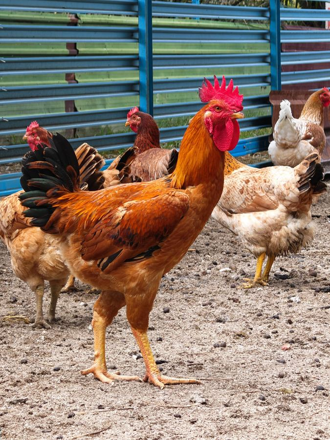
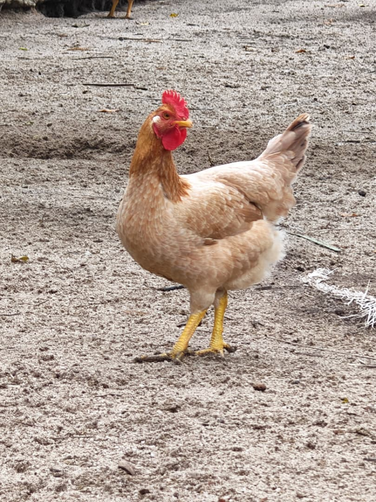

Free Range Farm

Welcome to Free Range Farm, where our chickens roam freely in open pastures. We believe happy chickens make for the best quality, natural produce for your family.
free range chicken
We Promise
Raised naturally
Premium meat quality
Free of antibiotics and artificial additives
Gallery
"Raised to Roam Freely"
We believe that a FREE Chicken makes the best Chicken. Allowing the chickens to engage in natural behaviors helps reduce their stress level and result in overall healthier birds!

"Foraging for Better Nutrition"
Our free range chickens have access to the outdoors and hence able to forage naturally on insects, seed, and plants. Studies have shown that combined with increased activity, free-range chickens generally have higher levels of omega-3 fatty acids, which helps in support heart health, reduce inflammation, and benefit brain function, compared to conventionally raised chickens. Also due to their active movement, free-range chicken breasts generally have significantly less saturated fat and hence are more tender and healthier.

"Slow-Grown for Premium Texture"
In our farm, we practice a slow-growth system in raising our chickens. All our chickens are raised for more than 80 days! By allowing our chickens to grow naturally according to their biological needs, in contrast to current commercial fast-growing broilers, our chickens have better biological integrity and stronger immune system. This allows us to refrain from the usage of antibiotics on our chickens. Also, because of this longer growing time, our chickens have finer breast fibers, which results in premium firm and juicy chew meat!

"Locked-In Freshness"
Our chickens are handled with vacuum packaging and blast freezing to preserve the premium meat quality. While the vacuum packaging ensures no oxidation degradation, the blast freezing ensures that no freezer burn happens within the meat. Together, they create the perfect combination to preserve the juiciness and tenderness of the meat.
Frequently Asked Questions
Free Range Farm is based in Ipoh, Perak, where our chickens roam freely across open pastures every day.
Refrigerate at 0°C–4°C, or freeze below -18°C.
Ideal for roasting, braising, grilling, and more.
Our chickens are raised using a slow-growth system, unlike fast-growing commercial broilers.
It strengthens the chickens' immune systems, removing the need for antibiotics, while developing finer muscle fibers for a firmer, juicier bite.
Foraging boosts omega-3s and lowers saturated fat, creating healthier and more tender meat.
No. They eat a balanced diet of chicken feed alongside naturally foraged plants and insects.
Vacuum packaging prevents oxidation, while blast freezing prevents freezer burn — together, they preserve the meat's juiciness and tenderness.
It supports heart health, reduces inflammation, and benefits brain function.